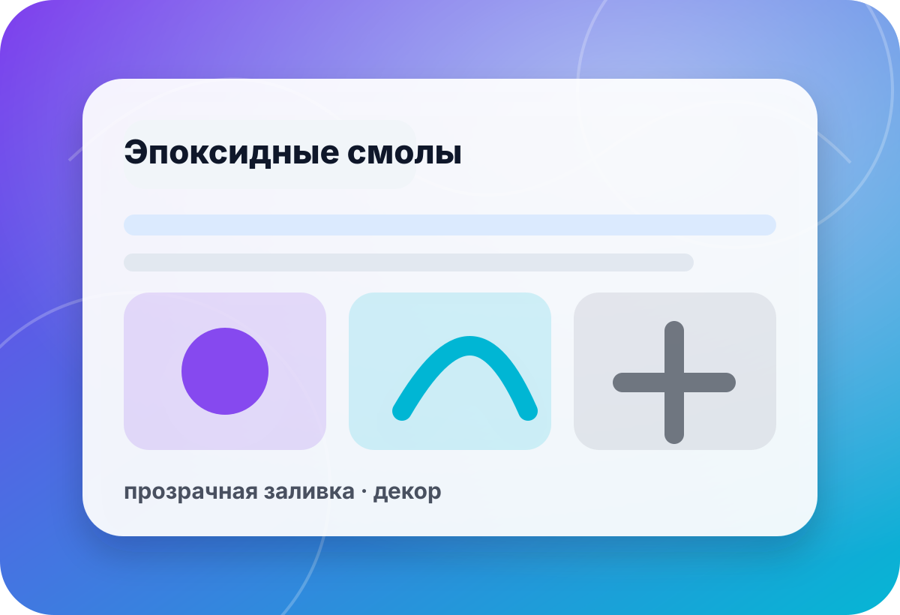

подкатегория · жидкие пластики
Пластики улучшенных характеристик для деталей с повышенными требованиями
Если отливка должна держать нагрузку, точную геометрию, чистую поверхность или особые условия эксплуатации, выбор начинается не с названия серии, а с требований к детали и тестовой пробы.
- нагрузка
- режим
- точность
- посадка
- поверхность
- финиш
- тест
- проба

быстрый выбор
Сначала зафиксируйте, что именно должно стать лучше
«Улучшенные характеристики» могут означать разные задачи: прочность, ударостойкость, термостойкость, чистую поверхность, тонкие стенки или стабильность в серии. Без этих вводных легко купить не тот материал.
Требований пока нетНачните с пластика общего назначения и базовой проверки формы.К общему выбору →Нужен цвет, наполнитель или эффектДобавки проверяются отдельно: они могут менять вязкость, поверхность и режим заливки.К добавкам →Критичны пузырьки и стабильностьПодберите процесс дегазации, тару и объём под материал и форму.К оборудованию →
связанные разделы
Что добавить к материалу, чтобы получить результат
Preview не обещает неподтверждённые характеристики, цены и наличие. Перед заказом фиксируем условия применения и проверяем связку на малой пробе.
▣Все жидкие пластики
Общий раздел для сравнения назначения, процесса и требований к отливке.
- серии
- задачи
- подбор

◌Прозрачные пластики
Для задач, где кроме прочности важны визуальный эффект и чистота заливки.
- прозрачность
- пузырьки
- финиш
⬢Специальное назначение
Если требования выходят за обычную отливку и нужен отдельный маршрут проверки.
- условия
- режим
- ограничения
 ◎
◎Силиконы для форм
Форма должна выдержать геометрию детали, съём и контакт с выбранным пластиком.
- форма
- рельеф
- тираж
✦Разделители
Помогают снизить риск повреждения формы и поверхности при съёме.
- съём
- поверхность
- совместимость
✚Добавки к пластикам
Красители и наполнители только после проверки влияния на материал и процесс.
- цвет
- вязкость
- проба
чек-лист
Что проверить до покупки усиленного пластика
Нагрузка и условия
Опишите, что деталь должна выдерживать: удар, изгиб, трение, температуру, влагу или декоративную эксплуатацию.
Уточнить:нагрузка · среда · срок · рискГеометрия и посадки
Тонкие стенки, посадочные места, резьбы и скрытые полости требуют аккуратного выбора материала и формы.
Уточнить:размер · допуск · стенка · рельефПроцесс заливки
Смешивание, тара, вакуум, температура и скорость работы влияют на прочность и поверхность.
Уточнить:объём · вакуум · тара · температураКонтрольная проба
Перед серией проверьте съём, пузырьки, цвет, финиш и поведение детали в реальных условиях.
Уточнить:проба · финиш · посадка · сериямини-бриф
Опишите требования к детали — подберём пластик и маршрут проверки
Форма в preview не отправляет данные на сервер. Для реального запуска подключается CRM/почта/мессенджер после согласования.